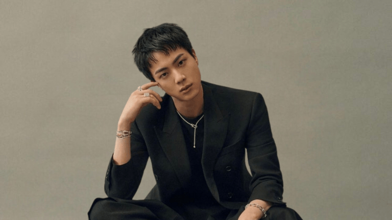

Kim Seokjin
Kim Seokjin

¿Quién es?
Jin, cuyo nombre real es Kim Seokjin, nació el 4 de diciembre de 1992 en Gwacheon, Corea del Sur, y es el integrante mayor de BTS. Actualmente tiene poco más de 30 años y es vocalista dentro del grupo. Es ampliamente conocido por su personalidad carismática, su sentido del humor y su apodo “Worldwide Handsome”. A pesar de haber comenzado sin experiencia musical, ha logrado desarrollar una voz potente y estable, especialmente destacada en canciones emotivas.
Su unión a BTS
Su historia es bastante particular, ya que fue descubierto por un reclutador de Big Hit Entertainment mientras caminaba por la calle. En ese momento, Jin estudiaba actuación, no música. Sin embargo, tras ingresar como trainee, trabajó intensamente para desarrollar sus habilidades vocales y escénicas, logrando convertirse en un pilar importante dentro del grupo.
Trabajo solista
Entre sus canciones más representativas se encuentra “The Astronaut”, la cual refleja su estilo centrado en baladas emotivas y pop rock. Su música suele transmitir sentimientos profundos como amor, nostalgia y conexión emocional, destacando por la claridad y estabilidad de su voz.
¡Escucha su música!
Conecta con la calidez y sensibilidad de su voz en “The Astronaut”, una canción que transmite emociones puras y cercanas.
Conoce su música